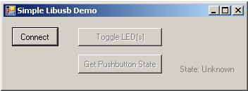
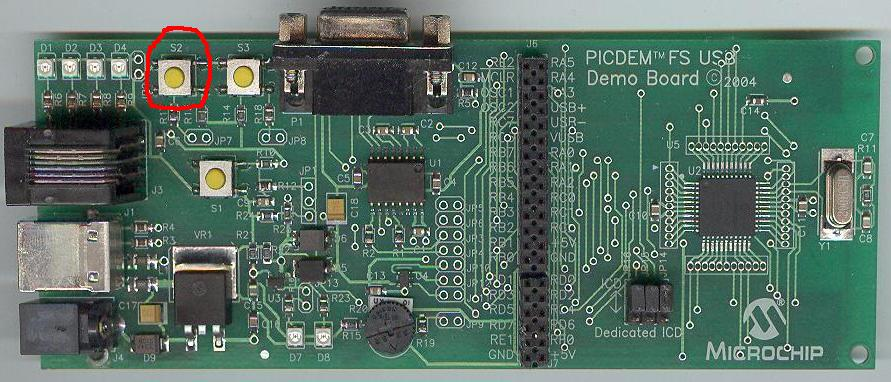
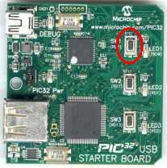

Getting Started: Running the “Device
– Libusb – Generic Driver Demo”
Configuration
1: PICDEM FS USB
Configuration
2: PIC18F87J50 PIM
Configuration
4: Low Pin Count USB Development Kit
Configuration
5: PIC24F Starter Kit 1
Configuration
6: PIC18F46J50 Full Speed USB Demo Board
Configuration
7: PIC32 USB Starter Board
Configuration
8: PIC18F Starter Kit
Configuration
1: PICDEM FS USB
Configuration
2: PIC18F87J50 PIM
Configuration
4: Low Pin Count USB Development Kit
Configuration
5: PIC24F Starter Kit 1
Configuration
6: PIC18F46J50 Full Speed USB Demo Board
Configuration
7: PIC32 USB Starter Board
Configuration
8: PIC18F Starter Kit
Required Hardware:
To run this project, you will need one of the
following sets of hardware:
Configuration 1: PICDEM FS USB
PICDEM
FS USB (DM163025)
Configuration 2: PIC18F87J50 PIM
PIC18F87J50
Plug-In-Module (PIM) (MA180021)
Configuration 3: Explorer 16
Explorer
16 (DM240001)
USB
PICtail™ Plus Daughter Card (AC164131)
And one of the following PIMs
PIC24FJ64GB004
Plug-In-Module (PIM) (MA240019)
PIC24FJ256GB110 Plug-In-Module (PIM) (MA240014)
PIC32MX USB Plug-In-Module (PIM) (MA320002)
Configuration 4: Low Pin Count USB Development Kit
Low
Pin Count USB Development Kit with PICKit 2 Debugger/Programmer (DV164126)
or without Debugger/Programmer (DM164127)
Configuration 5: PIC24F Starter Kit 1
PIC24F
Starter Kit 1 (DM240011)
Configuration 6: PIC18F46J50 Full Speed USB Demo Board
PIC18F46J50
Full Speed USB Demo Board (MA180024)
Configuration 7: PIC32 USB Starter Board
PIC32 USB Starter Board (DM320003)
Configuration 8: PIC18F Starter Kit
PIC18F Starter Kit (DM180021)
Configuring the Hardware:
This
section describes how to set up the various configurations of hardware to run
this demo.
Configuration 1: PICDEM FS USB
Configuration 2: PIC18F87J50 PIM
Configuration 3: PIC24FJ256GB110 PIM + Explorer 16
Configuration 4: Low Pin Count USB Development
Kit
Configuration 5: PIC24F Starter Kit 1
Configuration 6: PIC18F46J50 Full Speed USB Demo Board
Configuration 7: PIC32MX USB Starter Board
Configuration 1: PICDEM FS USB
1)
If using the PICDEM FS USB Demo Board, no hardware related configuration or
jumper setting changes should be necessary.
The demo board need only be programmed with appropriate firmware.

Configuration 2: PIC18F87J50 PIM
1)
Short JP4 on the PIC18F87J50 PIM. This
allows the demo board to be powered through bus power.

2)
Short JP1 such that the “R” and “U” options are shorted.

4)
Before connecting the PIC18F87J50 PIM to the HPC Explorer board, remove all
attached cables from both boards.
Connect the PIC18F87J50 PIM to the HPC Explorer board. Be careful when connecting the boards to
insure that no pins are bent or damaged during the process. Also insure that the PIM is not shifted in
any direction and that all of the headers are properly aligned.
Configuration 3: Explorer 16
1)
Before attaching the PIM to the Explorer 16 board, insure that the processor
selector switch (S2) is in the “PIM” position as seen in the image below.
.JPG)
2)
Short the J7 jumper to the “PIC24” setting
.JPG)
3)
Before connecting the PIM to the Explorer 16 board, remove all attached cables
from both boards. Connect the PIM to the
Explorer 16 board. Be careful when
connecting the boards to insure that no pins are bent or damaged during the
process. Also insure that the PIM is not
shifted in any direction and that all of the headers are properly aligned.
3a)
If using the PIC24FJ64GB004 PIM, please insure that the programming port
switch is switched in the PGX1 direction.

4) On the USB PICTail Plus board, short jumper
JP1. Remove all other shorts on the
board.
.JPG)
5) Connect the USB PICTail Plus board to either
of the female PICTail Plus connectors or on the card edge connector (J9) at the
edge of the Explorer 16 board.
Note: When using the HID bootloader for PIC32, it is
important to modify the procdefs.ld file to relocate the sections of code that
will hold the bootloader and those sections that will hold the user
application. Example modified
procdefs.ld files have been provided with each project. This file is currently named
“Procdefs.ld.boot”. When using the
example project with the bootloader it is required to remove the “.boot”
section of the file. This will allow
MPLAB to use this file instead of the default linker file. Once the linker file is renamed, however, the
project will no longer work without the bootloader. Please rename the file in order to get the
project working again with PIC32.
Configuration 4: Low Pin Count USB Development Kit
1) Short pins 2 and 3 of J14. Make sure J12 is left open.

Configuration 5: PIC24F Starter Kit 1
The PIC24F Starter Kit does not require any hardware setup
to run this demo. This demo does,
however, require the user to change the default selected device in the project
before compiling the demo.
1) Open the associated project file
for C30
2) In MPLAB Select
“Configure->Select Device”
3) In the device list box in the top
left corner of that window, select “PIC24FJ256GB106”
Configuration 6: PIC18F46J50 Full Speed USB Demo Board
1) Short JP3 to allow the board to
be powered from the USB.
.jpg)
Configuration 7: PIC32 USB Starter Board
No specific hardware configuration is required for this
demo. Connect the USB cable to the OTG connector J5 on the bottom of the board.

Configuration 8: PIC18F Starter Kit
No specific hardware configuration is required for this
demo.

To
run this project, you will need to load the corresponding firmware into the
microcontroller. Precompiled Demos are
available in the “<Install Directory>\USB Precompiled Demos”
folders. Each demo hex filename should
include information regarding the hardware platform it is compiled for. For this demo, select the appropriate “LibUSB
– Generic Driver Demo” hex files that matches the hardware configuration that
you plan to use.
For
more information about how to load a precompiled project, please see the
“Getting Started – Loading a precompiled demo” guide.
The
source code for this demo firmware is available in the “<Install Directory\
USB Device - LibUSB - Generic Driver
Demo\LibUSB Simple Demo - Firmware” directory.
In this directory you will find all of the user level source and header
files as well as project and workspace files for each of the hardware
platforms.
Please
note that when using either the C30 or C32 demo projects you will be required
to select the correct processor for the demo board.
1) Open the associated project file
2) In MPLAB Select
“Configure->Select Device”
3) In the device list box in the top
left corner of that window, select the desired device.
For
more help on how to compile and program projects, please refer to the MPLAB®
IDE help available through the help menu of MPLAB (Help->Topics…->MPLAB
IDE).
Running the Demo (Windows):
This
demo uses the selected hardware platform as a Libusb class USB device. Libusb-Win32 is a USB Library for the Windows
operating systems. The library allows user space applications to access
any USB device on Windows in a generic way without writing any line of kernel
driver code. This driver allows users to
have access to interrupt, bulk, and control transfers directly.
The
SimpleLibUSBDemo.exe program and the associated firmware demonstrate how to use
the Libusb device drivers for basic general purpose USB data transfer. To make the PC source code as easy to
understand as possible, the demo has deliberately been made simple, and only
sends/receives small amounts of data.
Before you can run the SimpleLibUSBDemo.exe executable, you
will need to have the Microsoft® .NET Framework Version 2.0 Redistributable
Package (later versions probably okay, but not tested) installed on your
computer. Programs which were built in
the Visual Studio® .NET languages require the .NET redistributable package in
order to run. The redistributable
package can be freely downloaded from Microsoft’s website. Users of Windows Vista® operating systems
will not need to install the .NET framework, as it comes pre-installed as part
of the operating system.
The
source code for SimpleLibUSBDemo.exe file was created in Microsoft Visual C++®
2008 Express Edition. The source code
can be found in the “<Install Directory>\ USB Device - Libusb - Generic
Driver Demo\ Libusb Simple Demo -
Windows Application\Libusb Simple Demo - PC Application - MS VC++ 2008 Express”
directory. Microsoft currently
distributes Visual C++ 2008 Express Edition for free, and can be downloaded
from Microsoft’s website.
To
launch the application, simply double click on the executable “SimpleLIbusbDemo.exe”
in the “<Install Directory>\USB Device - Libusb - Generic Driver
Demo\Windows Application” directory. A window like that shown below should
appear:

If
instead of this window, an error message pops up while trying to launch the
application, it is likely the Microsoft .NET Framework Version 2.0
Redistributable Package has not yet been installed. Please install it and try again.
In
order to begin sending/receiving packets to the device, you must first find and
“connect” to the device. As configured
by default, the application is looking for HID class USB devices with VID =
0x04D8 and PID = 0x0204. The device
descriptor in the firmware project meant to be used with this demo uses the
same VID/PID. To run the demo program
the USB device with the correct precompiled .hex file. If you are connecting the device for the
first time, Windows pops up a window asking you to install the driver for the
device. When asked for the driver point
it to the inf file provided along with the demo. Windows takes while to install the driver for
the USB device that is just plugged in.
Open the Device manager and ensure that the USB device is listed under
the ‘Libusb Demo Devices’. Once the
driver is installed hit the “Connect” button, the other pushbuttons should
become enabled. If hitting the connect
button has no effect, it is likely the USB device is either not connected, or
has not been programmed with the correct firmware.
Hitting
the Toggle LED(s) should send a single packet of general purpose generic data
to the Custom class USB peripheral device.
The data will arrive on the Bulk OUT endpoint. The firmware has been configured to receive
this generic data packet, parse the packet looking for the “Toggle LED(s)”
command, and should respond appropriately by controlling the LED(s) on the demo
board.
The
“
For
hardware configuration 1 (PICDEM FS USB Demo Board), the firmware will check
pushbutton “S2” (RB4).
For
hardware configuration 2 (PIC18F87J50 PIM), the firmware will check pushbutton
“S4” (RB4).
For
hardware configuration 3 (Explorer 16), the firmware will check pushbutton “S3”
(RD6).
For
hardware configuration 4 (Low Pin Count USB Development Kit), the firmware will
check pushbutton “S1” (RA3).
For
hardware configuration 5 (PIC24F Starter Kit 1), the pushbutton functionality
is not implemented in this demo at this point of time.
For
hardware configuration 6 (PIC18F46J50 PIM), the firmware will check pushbutton
“S2” (RB2).
For
hardware configuration 7 (PIC32 USB Starter Kit), the firmware will check
pushbutton “SW1” (RD6).
The
PC then requests a packet of data from the device (which will be taken from the
Bulk IN endpoint). Once the PC
application receives the response packet, it will update the pushbutton state
label.
Try
experimenting with the application by holding down the appropriate pushbutton
on the demo board, and then simultaneously clicking on the “
To
make for a more fluid and gratifying end user experience, a real USB
application would probably want to launch a separate thread to periodically
poll the pushbutton state, so as to get updates regularly. This is not done in this simple demo, so as
to avoid cluttering the PC application project with source code that is not
related to USB communication.
In
order to build the application, copy the file <libusb-win32 unzipped
folder>\ libusb-win32-device-bin-0.1.12.1\lib\msvc\libusb.lib and paste to ‘lib’
folder of the VC++. Also copy the file
<libusb-win32
unzipped folder>\ libusb-win32-device-bin-0.1.12.1\ include\usb.h and paste
to the “<Install Directory>\USB Device - Libusb - Generic Driver
Demo\Windows Application\Microsoft VC++ 2008 Express\SimpleLibusbDemo’ folder.
The
SimpleLibUSBDemo program and the associated firmware demonstrate how to use the
Libusb device drivers for basic general purpose USB data transfer. To make the PC source code as easy to
understand as possible, the demo has deliberately been made simple, and only
sends/receives small amounts of data.
Before
you can run the SimpleLibUSBDemo executable, you will need to have the libusb
0.1 driver installed on your computer.
The libusb can be downloaded from sourceforge.net.
The
source code for SimpleLibUSBDemo.exe file was created using QT3 Designer. The source code can be found in the
“<Install Directory>\ USB Device - Libusb - Generic Driver Demo\Libusb
Simple Demo - Linux Application\ Libusb
Simple Demo - Linux Application -QT3” directory.
To
launch the application, open the Terminal and navigate to the “<Install
Directory>\USB Device - LibUSB - Generic Driver Demo\Linux Application\Qt3”
directory and execute the command “sudo ./libusb_gui_qt”. Enter the Super user password when requested.
A window like that shown below should appear:

In
order to begin sending/receiving packets to the device, you must first find and
“connect” to the device. As configured
by default, the application is looking for HID class USB devices with VID =
0x04D8 and PID = 0x0204. The device
descriptor in the firmware project meant to be used with this demo uses the
same VID/PID. To run the demo program
the USB device with the correct precompiled .hex file. If you are connecting the device for the
first time, Windows pops up a window asking you to install the driver for the
device. When asked for the driver point
it to the inf file provided along with the demo. Windows takes while to install the driver for
the USB device that is just plugged in.
Open the Device manager and ensure that the USB device is listed under
the ‘Libusb Demo Devices’. Once the
driver is installed hit the “Connect” button, the other pushbuttons should
become enabled. If hitting the connect
button has no effect, it is likely the USB device is either not connected, or
has not been programmed with the correct firmware.
Hitting
the Toggle LED(s) should send a single packet of general purpose generic data
to the Custom class USB peripheral device.
The data will arrive on the Bulk OUT endpoint. The firmware has been configured to receive
this generic data packet, parse the packet looking for the “Toggle LED(s)”
command, and should respond appropriately by controlling the LED(s) on the demo
board.
The
“
For
hardware configuration 1 (PICDEM FS USB Demo Board), the firmware will check
pushbutton “S2” (RB4).
For
hardware configuration 2 (PIC18F87J50 PIM), the firmware will check pushbutton
“S4” (RB4).
For
hardware configuration 3 (Explorer 16), the firmware will check pushbutton “S3”
(RD6).
For
hardware configuration 4 (Low Pin Count USB Development Kit), the firmware will
check pushbutton “S1” (RA3).
For
hardware configuration 5 (PIC24F Starter Kit 1), the pushbutton functionality
is not implemented in this demo at this point of time.
The
PC then requests a packet of data from the device (which will be taken from the
Bulk IN endpoint). Once the PC
application receives the response packet, it will update the pushbutton state
label.
Try
experimenting with the application by holding down the appropriate pushbutton
on the demo board, and then simultaneously clicking on the “
To
make for a more fluid and gratifying end user experience, a real USB
application would probably want to launch a separate thread to periodically
poll the pushbutton state, so as to get updates regularly. This is not done in this simple demo, so as
to avoid cluttering the PC application project with source code that is not
related to USB communication.
In
order to build the application navigate to the “<Install Directory>\USB
Device - LibUSB - Generic Driver Demo\Linux Application\Qt3” directory and
execute the command “make”.
Push Button
PICDEM
FS USB:

PIC18F87J50
PIM:
.JPG)
Explorer
16:
.jpg)
Low pin count USB development kit:

PIC24F Starter Kit 1:
The PIC24F
Starter Kit 1 does not implement the pushbutton for these demos. This functionality is not present in this
demo.
PIC18F46J50 Full Speed USB Demo Board:
.jpg)
PIC32 USB Starter Kit

PIC18 Starter kit

Trademarks:
The Microchip name and logo, the Microchip logo, MPLAB, and PIC
are registered trademarks of Microchip Technology Incorporated in the
PICDEM and PICTail are trademarks of Microchip Technology
Incorporated in the
Microsoft, Windows, Visual Studio, Visual C++, and Windows Vista
are either registered trademarks or trademarks of Microsoft Corporation in the